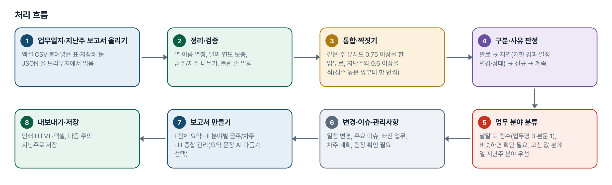
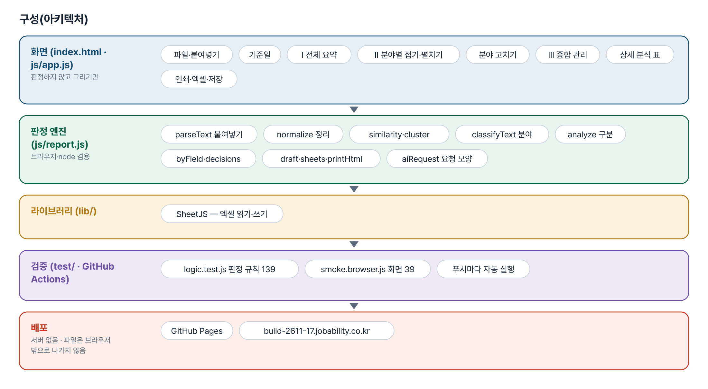
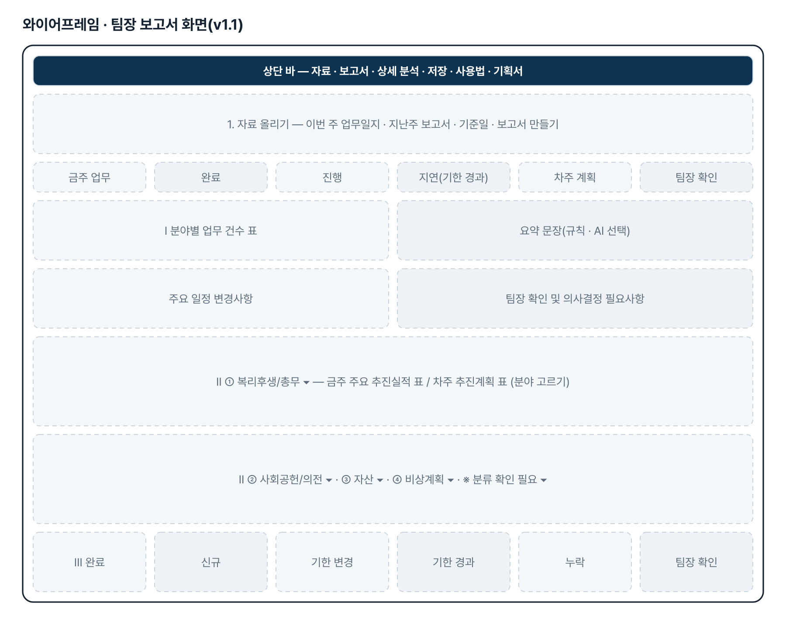
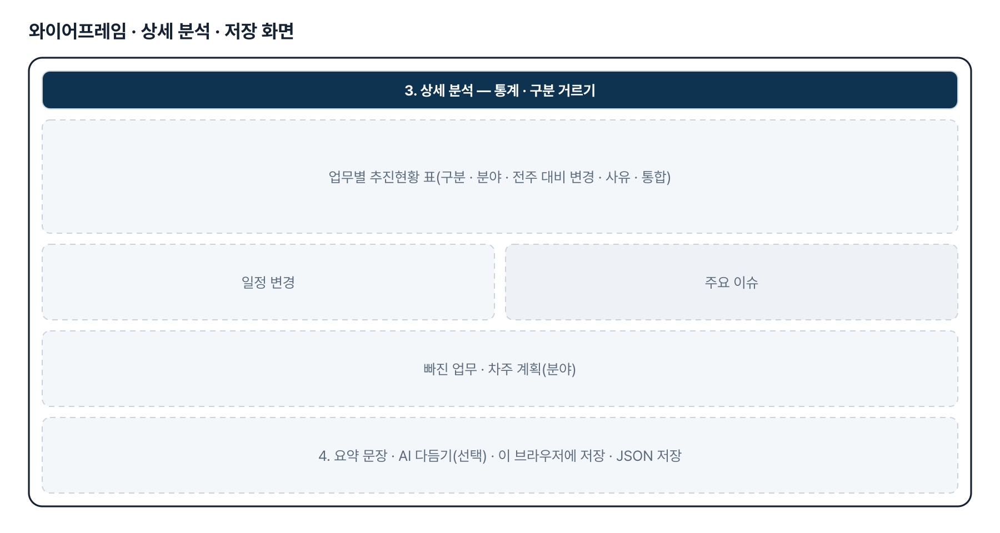
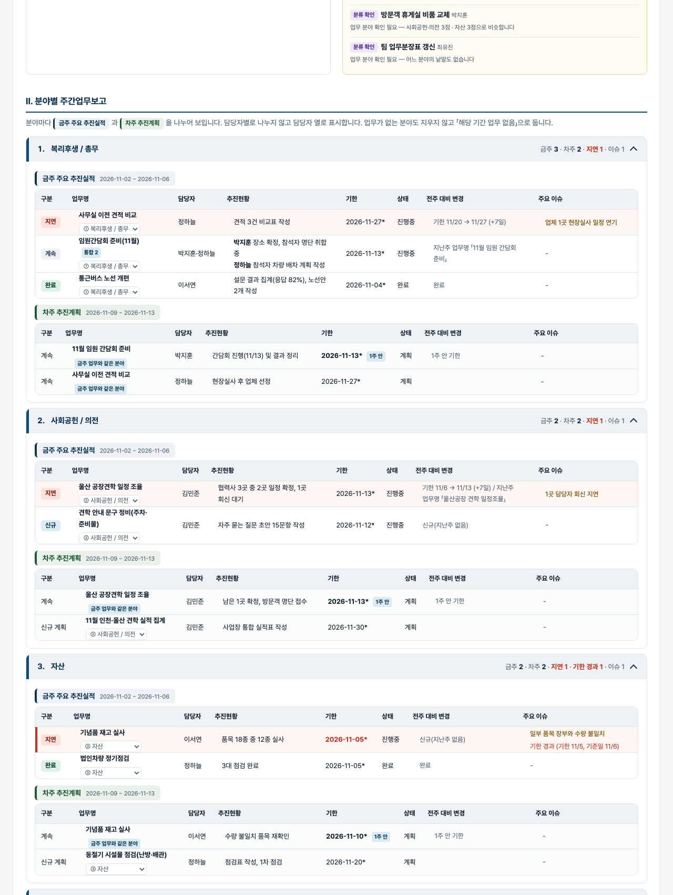

기획서 내려받기
파이프라인 · 아키텍처 · 와이어프레임 · 개발일지가 들어간 워드 문서입니다. 버전마다 따로 남깁니다.
| 버전 | 날짜 | 바뀐 점 | 파일 |
|---|---|---|---|
| v1.1 | 2026-11-03 | 개편 요청(게시물 4128625179) — 보고서 최상위 분류를 팀원 → 업무 분야 4개(복리후생/총무 · 사회공헌/의전 · 자산 · 비상계획, 고정 순서)로 / 분야 자동 분류(낱말 표 점수, 비슷하면 「분류 확인 필요」) · 화면에서 고치면 localStorage·JSON 저장 → 다음 주에도 같은 업무명이면 먼저 씀 · 일지 분야 열·지난주 분야도 읽음 / 보고서 Ⅰ 전체 업무 요약 → Ⅱ 분야별 금주 추진실적/차주 추진계획(8열, 없으면 「해당 기간 업무 없음」) → Ⅲ 종합 관리사항 6항목 · 인쇄 A4 분야 띠 유지 / 화면: 전체 요약 상단, 분야 접기·펼치기, 금주/차주 색 구분, 기한 경과 강조, 팀장 확인 영역 · 엑셀 분야 열 + 분야별 시트(7 → 14장) / 예제를 4개 분야 + 확인 필요 2건으로 다시 만듦 · 테스트 판정 62→139 · 화면 18→39 | 워드 내려받기 |
| v1.0 | 2026-11-02 | 첫 판 — 업무일지 취합·지난주 대비 구분·업무 통합·일정 변경·이슈·보고서 초안·엑셀·다음 주용 저장 / 기획서 워드 판·파이프라인·아키텍처·와이어프레임 추가 | 워드 내려받기 |
요구사항과 구현
| 기획서 요구 | 구현 |
|---|---|
| 팀원별 업무일지 자동 취합 | 엑셀 여러 파일·여러 시트·붙여넣은 표(탭·마크다운·CSV), 팀원 열이 없으면 파일·시트 이름에서 짐작 |
| 지난주 보고서와 비교해 변경사항 자동 추출 | 업무명 정규화 + 글자쌍 유사도로 지난주 업무와 짝짓기 |
| 업무별 추진현황·일정·주요 이슈 분석 | 업무별 표 · 일정 변경 목록(지난주 대비 / 차주 계획 대비) · 이슈 모음 |
| 지연·완료·신규 업무 구분 | 규칙 판정 4종(완료·지연·신규·계속), 지연은 사유(기한 경과·일정 변경 +n일·상태) 표시 |
| 중복 업무 통합 | 같은 주 유사도 0.75 이상이면 팀원이 달라도 한 줄로, 「통합」 표시 |
| 핵심 추진사항 요약 | 규칙 요약 문장(숫자는 데이터에서 셈), AI 다듬기는 선택 |
| 팀장 보고용 초안 자동 생성 | 인쇄(A4) · 인쇄용 HTML · 엑셀 7시트 |
| (추가) 다음 주로 이어 쓰기 | 이번 주 결과를 localStorage·JSON·엑셀 「다음주_지난주용」 시트로 저장 |
| (v1.1) 모든 업무를 4개 업무 분야로 분류 | 원문 3절의 세부 항목 낱말 표(FIELDS)로 업무명 3점·추진현황/이슈/목적 1점 점수, 0점이거나 2위와 2점 미만 차이면 「분류 확인 필요」 |
| (v1.1) 분류가 모호하면 담당자가 수정 | 업무명 아래 분야 고르기 → localStorage·저장 JSON 에 남겨 다음 주에도 같은 업무명이면 먼저 씀. 우선순위 고친 값 → 일지 분야 열 → 지난주 분야 → 자동 |
| (v1.1) Ⅰ 전체 요약 → Ⅱ 분야별 → Ⅲ 종합 관리사항 | byField · decisions · management. 분야마다 금주 추진실적/차주 추진계획 표(구분·업무명·담당자·추진현황·기한·상태·전주 대비 변경·주요 이슈), 없으면 「해당 기간 업무 없음」 |
| (v1.1) 중복 집계 없음 · 분류와 상태 판정 분리 | 금주 업무와 이어지는 차주 계획은 같은 분야(linked). 구분 판정식은 분야를 보지 않음 — 테스트로 고정 |
| (v1.1) 화면 UI/UX · 인쇄 | 전체 요약 상단, 분야 4개 고정 순서 접기·펼치기, 금주/차주 색 구분, 기한 경과 강조, 이슈·팀장 확인 별도 영역, 인쇄 A4 에서 분야 띠·표 머리글 반복 |
| (v1.1) 엑셀 | 업무별현황·차주계획에 분야 열, 전체요약·분야별 5장·종합관리 시트 추가(7 → 14장) |
그림으로 보기





개발일지
2026-11-13 · 마무리 — 로그인 · 게시판 · 첫 화면(판 2026-11-13.1)
- 과정 마무리 묶음을 붙임(마산 2차수 과제와 같은 키트) — 로그인 전 첫 화면(사진 3장 · 기능 · 사용 순서 · 기획서), 회원가입 → 사용 신청 → 관리자 승인, 게시판 · 새 글 알림, 내 정보, 관리(구성원 승인 · 첫 화면 모양)
- Supabase 표 · 함수 · 정책은 전부 build261117_ 로 시작(auth.sql · board.sql · site.sql). 과정용 프로젝트에 적용했고, supabase/README.md 순서대로 본인 프로젝트로 옮길 수 있음
- 도구의 계산 · 판정 · 저장 방식은 그대로(업무 자료는 지금처럼 브라우저 안에서만 처리). 기획서 · 사용법 쪽은 로그인 없이 읽음
- 내 PC(파일로 열기 · localhost)에서는 로그인을 건너뜀 — 주소 끝에 ?auth=1 을 붙이면 로그인 화면을 볼 수 있음
2026-11-03 · v1.1 분야별 팀장 보고서
- 패들릿 게시물 4128625179 개편 요청 1~8절을 CLAUDE.md §2 v1.1 표에 대응
- report.js — FIELDS 낱말 표 · classifyText/resolveField · byField/decisions/management · 분야 표·Ⅰ Ⅱ Ⅲ 인쇄 · 분야 시트 · 저장 JSON v2(fields)
- app.js — 팀장 보고서 영역(요약·분야 details·종합 관리) · 분야 고르기(저장·재판정) · 상세 분석 표에 분야 열
- 판정 테스트 139 · 화면 테스트 39 통과, 되돌려 확인 9가지
2026-11-02 · 첫 판
- 패들릿 build02 김수준 기획 ③을 작업 지시서(CLAUDE.md)로 옮기고 구현
- 판정 엔진 report.js — 읽기·정규화·유사도·통합·구분·일정 변경·이슈·초안·내보내기
- 화면 — 두 칸 올리기·통계·업무별 표·초안·AI 다듬기(선택)·인쇄·엑셀·저장
- 판정 테스트 62 · 화면 테스트 18 통과